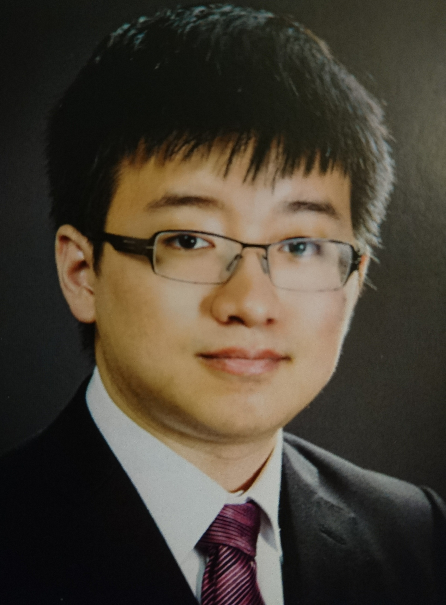

About Me

My name is Kevin Wang and I graduated Pennsylvania State University studying Engineering Sciences, a multidisciplinary program in which student demonstrate their knowledge in engineering through completing a capstone project. To which I am able to combine my interest in multiple subjects, especially electrical engineering and biomedicine, in the Magnetic Resonance Imaging (MRI) lab. My group, which includes students in mechanical and biomedical engineering, uses MRI technology in study tissue stiffness, an indicator of cancer and other diseases. At Penn State I recieved a cross disciplinary education that allows me to enagage problem solving in a unique way.
Growing up I was immersed in multiple cultures. I was born in Taiwan but grew up in the United States, China and Japan. In college I spent time studying abroad in Germany where I learned the basics of production management and manufacturing, and experienced their culture. I have a diverse cultural knowledge by living and studying in these different countries.
Currently I am studying some web development skills with UPenn's coding bootcamp. I am learning HTML and CSS, and plan on obtaining more skills in the future 6 months. I plan on entering the programming industry and would like to incorporate my multidisciplinary and cross-cultural background into my future work.